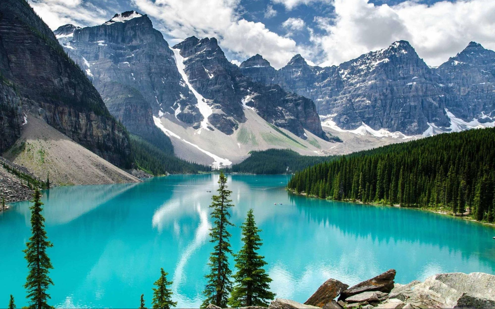

Parque Nacional Banff
El Parque Nacional Banff es el primer parque nacional de Canadá, establecido en 1885. Desde los humildes comienzos de Banff como una reserva de aguas termales de 26 kilómetros cuadrados, el Parque Nacional Banff ahora consta de 6.641 kilómetros cuadrados de paisajes montañosos incomparables enclavados en el corazón de las magníficas Montañas Rocosas canadienses.

Cataratas del Niágara
Niagara Falls es una ciudad ubicada en el sur de Ontario, Canadá. Su principal atractivo es, por supuesto, las Cataratas del Niágara, un conjunto de tres cascadas independientes que incluye la icónica Catarata de la Herradura, considerada una maravilla natural del mundo.

Montañas Rocosas
Es una cordillera localizada en Norteamérica, el sector de las Montañas Rocosas que se encuentra en Canadá, discurriendo por las provincias de Alberta y Columbia Británica. Una parte de este sector también corre por la parte norte de los estados de Idaho y Montana. El extremo norte de las Rocosas canadienses está en la llanura del río Liard, en la Columbia Británica.

Toronto
Con su increíble diversidad y multiculturalismo, que se reflejan en su gastronomía, festivales y barrios, su vibrante escena artística y cultural, su oferta de entretenimiento con equipos deportivos profesionales y eventos, las oportunidades al aire libre en el lago Ontario y el Toronto Island Park, y una arquitectura urbana interesante

Montreal
Allí te sorprenderá la bella arquitectura, iglesias como la Basílica de Notre-Dame, plazas, museos, mercados como el de Bonsecours y la entrada de metro de estilo arte nouveau igual que las de París. ¿Eres amante de la diversión y de los festivales culturales? En ese caso, Montreal seguro que te sorprenderá.

Vancouver
Una gran bahía donde poder avistar ballenas, un pintoresco centro histórico, un gran estadio para ver partidos de hockey sobre hielo, numerosos murales de arte urbano… Si estáis pensando en viajar a la Columbia Británica, no os perdáis los 15 lugares que ver en Vancouver, la tercera ciudad más poblada de Canadá.